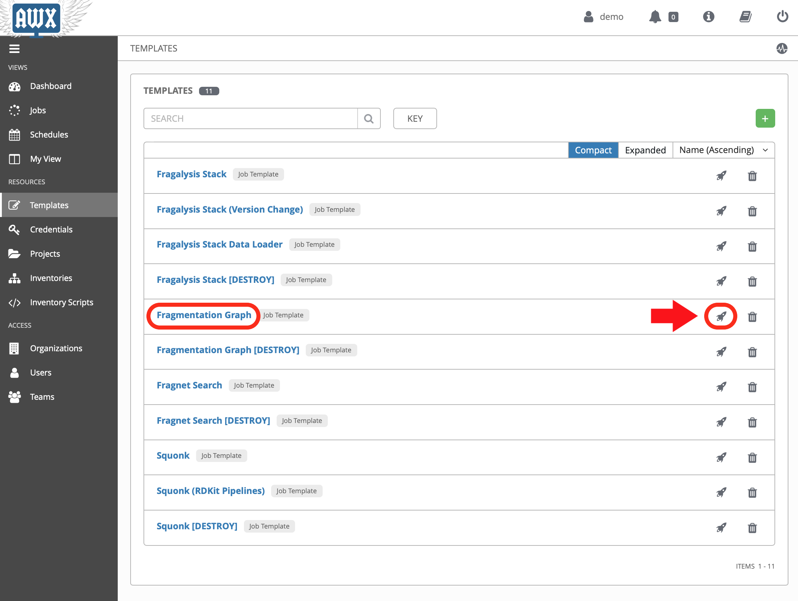
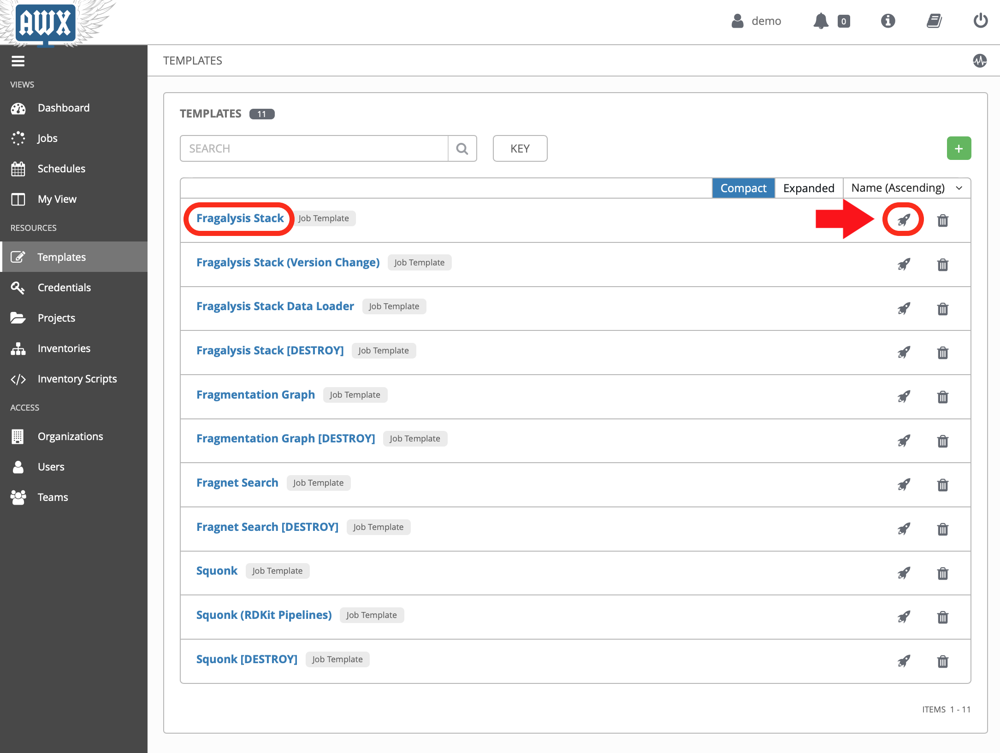
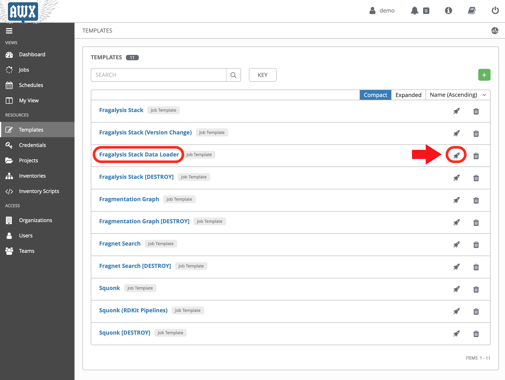
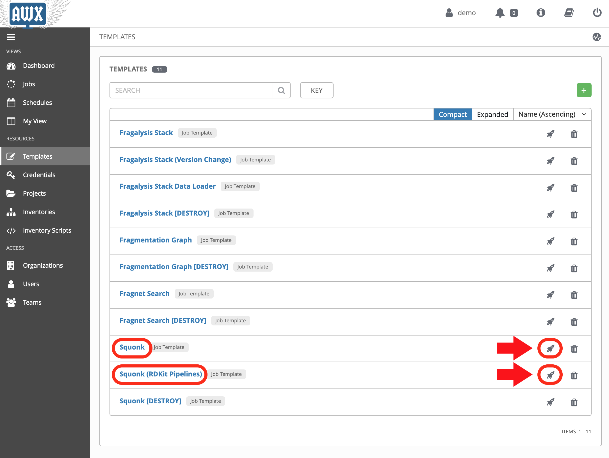
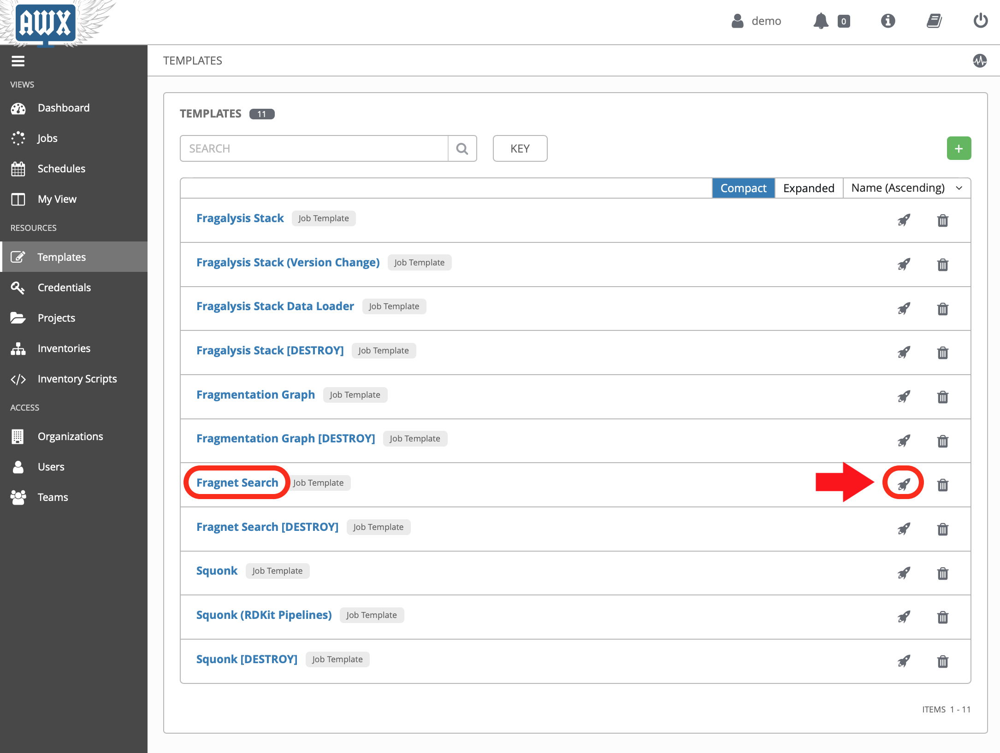
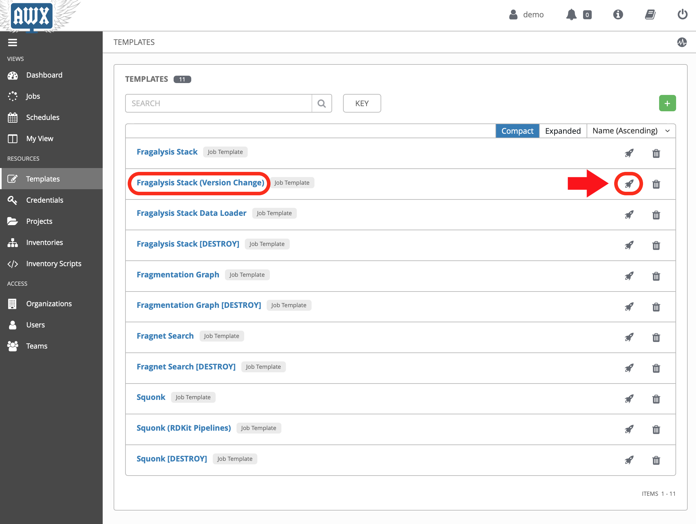

Deploying the demo applications¶
Notes on configuring the demonstration Fragalysis AWS-based kubernetes cluster for Diamond Light Source. These notes describe the software setup based on the the assumption that you have a viable cluster and are in possession of the
kubeconfigfile, have an AWS IAM Role, access to the wider internet and can pull code from git repositories, Docker Hub and images hosted on private (GitLab) registries.
To setup the cluster you need to complete the following steps: -
Create the software infrastructure
Configure the AWX application server
With the infrastructure and AWX application server setup we then deploy applications into the cluster using the Jobs that were configured above, in step 2.
Deploy a fragmentation graph database
Deploy Fragalysis
Deploy the Informatics Matters Squonk application
Deploy the Informatics Matters Fragnet Search application
Note
Allow 3 hours to install the infrastructure and all the application components. All times are approximate.
Prerequisites¶
Before trying to setup the demo you will need: -
A cluster¶
An AWS kubernetes cluster, with: -
At least 8 spare application CPU cores and 24Gi of RAM, with one node having at least 3 free cores and 6Gi of available RAM and a large memory node with at least 48Gi RAM
Achieved with a pair of 8-core 32Gi application nodes (e.g.
t3.2xlarge) and an 8-core 64Gi high-memory node (e.g.r5.2xlarge)
A storage class called “gp2” available to the cluster
A route to the cluster, normally achieved through a layer-4 Network Load Balancer in EKS or an Elastic IP associated with one of your application nodes if you’re using EC2
Suitable Domain re-directions, a wildcard or individual routes for: -
Keycloak
AWX
Fragalysis
Fragnet Search
Squonk
An AWS IAM user capable of managing the EC2 cluster
A node pool of application nodes
A node pool of graph (bigmem) nodes
The deployment benefits from node labels and taints (see labels and taints)
The cluster kubeconfig file
The cluster must have access to GitHub and GitLab
The cluster must have access to Docker Hub
The cluster must have access to Ansible Galaxy
An AWS S3 Bucket¶
Fragmentation and Fragalysis data available in an AWS S3 Bucket
A host¶
A unix control machine from where you’ll work (OSX 10.15.3 was used to prepare this demo)
Python 3 (Python 3.8.1 was used to prepare this demo), ideally using a virtual environment engine like conda
The git client
Ansible vault credentials to decrypt the encrypted variables in this repository
Access to GitHub
Access to Ansible Galaxy
Create the software infrastructure¶
Note
Allow 15 minutes to complete this task, which includes installation of an EFS provisioner, PostgreSQL database, Keyclock and AWX.
With the cluster and kubeconfig file available we can create the essential underlying software infrastructure.
The infrastructure is created using playbooks and roles present in the Informatics Matters infrastructure GitHub repository.
Start in a suitable working directory on your control machine (desktop or laptop) and prepare a directory that you can use for Python virtual environments.
Create a working directory and create and enter a Python 3 virtual environment:
$ mkdir -p ~/Code/im-demo
$ cd ~/Code/im-demo
$ conda create -n im-demo python=3.8
$ conda activate im-demo
Clone the infrastructure project and checkout the stable revision used for the demo:
$ git clone https://github.com/InformaticsMatters/ansible-infrastructure.git
$ cd ansible-infrastructure
$ git checkout tags/2020.12
From here you should follow the infrastructure project’s “Getting Started”
guide and then its “Creating the Infrastructure” guide. Importantly, in
the Creating sub-section, instead of using the
site-im-main-parameters.vault file we use site-im-demo-parameters.vault,
which requires its own vault key.
Ensure the file contains settings suitable for your cluster, which you an do by decrypting on-the-fly using Ansible Vault:
$ ansible-vault edit site-im-demo-parameters.vault
You will need to pay special attention to the following variables:
kc_hostname
ax_hostname
To install AWX you will need the context name of the cluster, located in your kubeconfig file:
contexts:
- name: "im-demo"
context:
user: "im-demo"
cluster: "im-demo"
Passing this into the playbook with -e ax_kubernetes_context=im-demo.
Now install the infrastructure (with any changes made to the vault file and saved):
$ ansible-playbook \
-e "@site-im-demo-parameters.vault" \
-e ax_kubernetes_context=im-demo \
site.yaml \
--ask-vault-pass
[provide the im-demo vault key]
If you don’t want to (or can’t) use the im-demo parameter file you can
still install the infrastructure in your cluster by providing your own
parameter file, and define values for the following variables:
cm_letsencrypt_email
db_user
db_user_password
pg_vol_storageclass
pg_bu_vol_storageclass
kc_admin_password
kc_hostname
ax_admin_password
ax_hostname
Allow approximately 6 minutes for the infrastructure provisioning to complete.
Once it’s installed you should be able to navigate to the AWX application
server using the address you gave it, or the one in the
site-im-demo-parameters.vault file if you used that.
With this done we can move to configuring AWX.
Configure the AWX application server¶
Note
Allow 5 minutes to complete this task, to configure and check the AWX application server
Configuration of the AWX server is achieved with the playbooks and roles in the Informatics Matters DLS Kubernetes GitHub repository.
Clone the project and checkout the stable revision used for the demo:
$ cd ~/Code/im-demo
$ git clone https://github.com/InformaticsMatters/dls-fragalysis-stack-kubernetes.git
$ cd dls-fragalysis-stack-kubernetes
$ git checkout tags/2020.10
$ pip install -r requirements.txt
$ ansible-galaxy install -r role-requirements.yaml
The demo configuration will create the following objects: -
An organisation
Credentials
A team
A demo user
Inventories and Hosts
Projects
Job Templates
You can view the configuration using ansible vault:
$ ansible-vault edit roles/awx-configuration/vars/config-demo.vault
Armed with the AWX admin user password used during the infrastructure
installation step above, you can now configure the AWX applications server
using its playbook, passing the password in via the command-line:
$ ansible-playbook -e tower_password=<PASSWORD> \
site-awx-configuration.yaml \
--ask-vault-pass
If you login to the AWX server now using the demo user you should be able
to navigate to the Templates page and see all the available jobs, as
shown in this screenshot: -
Deploying the demo applications¶
Note
Allow 2 hours to install all of the applications.
With the AWX server configured we can now run the Job Templates that are responsible for deploying the various applications.
Start by logging into the AWX application server as the demo user demo.
From there you should be able to navigate to the Templates screen where
all the templates are presented to you.
The Fragmentation Graph Database¶
Note
Allow 2 hours to complete this task.
Deploy the Fragmentation graph by launching the Fragmentation Graph template.
The jobs have been configured to first present a confirmation dialogue box so that you can adjust some key job variables before they run. for example, the Fragmentation Graph job allows you to provide a path to the graph data you want to deploy (using the
graph_bucket_pathvariable).
Acknowledge the dialogue (clicking Next) and then the Launch button.
As the graph initialisation can take some time the job does not
(at the time of writing) wait for the graph to initialise. We therefore use the
kubectl command-line to check on the status of the graph before moving on.
Check that the graph namespace exists:
$ kubectl get namespace/graph
NAME STATUS AGE
graph Active 7s
And then watch the Graph Pod status until it’s Running. The
graph contains an initialisation container used to download the graph
data to the cluster:
$ kubectl get pod/graph-0 -n graph -w
NAME READY STATUS RESTARTS AGE
graph-0 0/1 Init:0/1 0 14s
graph-0 0/1 Init:0/1 0 95s
graph-0 0/1 Init:0/1 0 100s
graph-0 0/1 PodInitializing 0 108s
graph-0 1/1 Running 0 114s
Once you see Running the Pod has started and you can ctrl-c from the
command.
The graph needs to import the downloaded files into a graph database, which can take a significant length of time, depending on the data that’s been downloaded.
You can follow the Graph Pod’s logs and wait for the import process to complete. The graph import typically involved 4 stages that are easily followed from the logs.
The output here has been truncated because there is a lot of it.
You’re waiting to see the word Finished. issued by the
cypher-runner.sh script:
$ kubectl logs pod/graph-0 -n graph -f
[..]
2020-03-19 14:25:08.527+0000 INFO ======== Neo4j 3.5.5 ========
2020-03-19 14:25:08.532+0000 INFO Starting...
2020-03-19 14:25:14.865+0000 INFO Bolt enabled on 0.0.0.0:7687.
2020-03-19 14:25:16.444+0000 INFO Started.
2020-03-19 14:25:17.531+0000 INFO Remote interface available at http://localhost:7474/
(cypher-runner.sh) Thu Mar 19 14:26:05 UTC 2020 Setting neo4j password...
(cypher-runner.sh) Thu Mar 19 14:26:07 UTC 2020 No legacy script.
(cypher-runner.sh) Thu Mar 19 14:26:07 UTC 2020 Trying /data/cypher-script/cypher-script.once...
(cypher-runner.sh) Thu Mar 19 14:26:08 UTC 2020 .once script executed.
(cypher-runner.sh) Thu Mar 19 14:26:08 UTC 2020 No .always script.
(cypher-runner.sh) Thu Mar 19 14:26:08 UTC 2020 Touching /data/data-loader/cypher-runner.executed...
(cypher-runner.sh) Thu Mar 19 14:26:08 UTC 2020 Finished.
Once you see that you can ctrl-c form the follow command and continue
with the remaining applications.
Fragalysis (and Data Loader)¶
Note
Allow 45 minutes to complete this task.
5 minutes for the stack and 40 minutes
for the initial (ALL_TARGETS) data load.
With the graph installed we can now start the Fragalysis Stack and its Data Loader.
Deploy Fragalysis by launching the Fragslysis Stack template.
As the stack initialisation is a little more deterministic (and short) the job waits for the stack to become ready before finishing. When this job finishes you know the stack is “up and running”.
You can’t use the stack without any target data so you now need to run the Data Loader.
Deploy the loader by launching the Fragslysis Stack Data Loader template (see below).
This job will also wait for the loader to complete. As we’re running a typical ALL TARGETS load this will take around 40 minutes. The job will time-out after an hour.
Squonk¶
Note
Allow 6 minutes to complete this task.
Deploy Squonk by launching the Squonk job template.
With Squonk deployed you can then inject the standard RDKit pipelines. Install the pipelines by running the Squonk (RDKit Pipelines) Job.
Fragnet Search¶
Note
Allow 1 minute to complete this task.
The Fragnet Search application relies on the database you installed earlier so we just need to deploy the search application using its Fragnet Search Job.
Labels and taints¶
Application nodes¶
Nodes for general application deployment employ the label key purpose
and value application. This is optional, deployments request nodes
with this label but are happy to reside on any node.
Graph database nodes¶
To create nodes to be used exclusively for the graph database we rely on
labels and taints. The graph database deployment benefits from nodes
with the label key purpose and value bigmem and the taint
key purpose, value bigmem and effect NoSchedule.
Deploying a -new- Fragalysis Stack¶
Note
Allow 5 minutes to complete this task.
We’ve included a Job Template that can be used to deploy a new Fragalysis Stack using the stack’s container image tag.
If a new Fragalysis Stack becomes available you can install it using the above Job. The stack, which exists as a pair of StatefulSet Pods is then gracefully replaced by the new image.
You’l be prompted for variables and it’s here that you can edit the
stack_image_tag value that’s used to deploy the application.
As there are two Pods the playbook waits for stack number 1 to restart and then for stack number 0 to restart, taking approximately 2 minutes per Pod. Using two Pods avoids service disruption during an upgrade.
Destroying the cluster¶
Note
Allow 5 minutes to complete this task.
You cannot delete the cluster without risking leaving volumes lying around. prior to deleting the cluster you should run the following Jobs: -
Fragalysis Stack [DESTROY]
Fragnet Search [DESTROY]
Squonk [DESTROY]
Fragmentation Graph [DESTROY]
Finally, from your ansible-infrastructure directory remove the
infrastructure using the unsite play, which will remove
Keycloak, PostgreSQL and the AWX application server and the
persistent volumes it uses:
$ cd ~/Code/im-demo/ansible-infrastructure
$ ansible-playbook \
-e "@site-im-demo-parameters.vault" \
unsite.yaml \
--ask-vault-pass
[provide the im-demo vault key]
You can now dispose of the cluster.